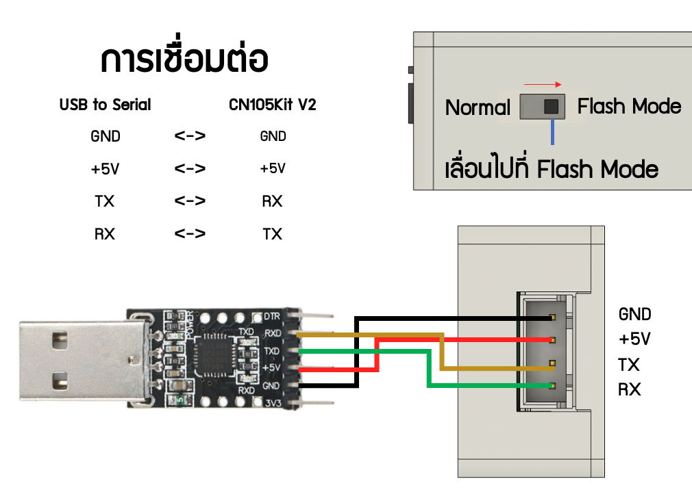

CN105Kit Web Tools
อัปเดตเฟิร์มแวร์โมดูล Wi-Fi CN105Kit ผ่าน Serial ง่ายๆ ผ่าน Browser
Current release: 2022.01.10 - magi's edition
(Aug 31, 2023)
อัปเดตผ่าน USB Serial
ขั้นตอน
- ปรับสวิตช์บนโมดูล CN105Kit เป็น Flash Mode
- เชื่อมต่อ USB to Serial เข้ากับโมดูล CN105Kit ตามแผนภาพนี้
- เลือกเวอร์ชั่น Hardware ด้านล่างแล้วกดปุ่ม Connect
- เลือก Serial Device และทำตามขั้นตอน
- รอจน flash firmware สำเร็จ และทำการปรับสวิทช์โมดูลไปที่ Normal Mode
เลือกเวอร์ชั่น Hardware
-
-
อัปเดตผ่าน OTA
สำหรับ CN105Kit V1 และ V2.1 เท่านั้น
ขั้นตอน
- Download ไฟล์เฟิร์มแวร์
.binจากที่นี่ ตาม hardware ที่ใช้ - เข้าไปที่หน้าเว็บผ่าน IP Address ของโมดูล
- กด Firmware Update แล้วเลือกไฟล์
.bin - กด Start upgrade
การดูเวอร์ชั่น Hardware
| รุ่น Hardware | รูป | Variant | Label | USB Serial | OTA |
|---|---|---|---|---|---|
| V1 |  |
Wemos D1 Mini ESP12E | - | ❌ | ✅ |
| V2 |  |
WiFi Serial ESP07 | 
หรืออาจไม่มี Label |
✅ | ❌ |
| V2.1 | |
WiFi Serial ESP12E | 
|
✅ | ✅ |
การเชื่อมต่อ USB to Serial สำหรับ CN105Kit V2 และ 2.1
